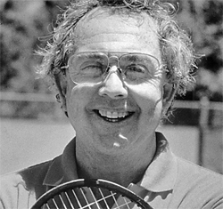
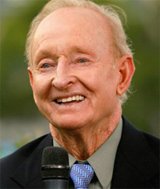
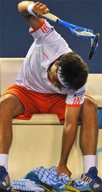

What is Confidence?¶
Jeff McCullough¶

Vic Braden was really, really smart.
The year was 1993. I was in Las Vegas and I was in a hurry. Somehow I was late to see the presentation of The Wizard Of Coto de Caza, Vic Braden.
Just a few months before, I had the fortuitous opportunity to question the tennis world's greatest Grand Slam winner, Rod Laver, regarding the nuts and bolts of the mental game. Stalking the Rocket through an airport terminal in the post midnight hours yielded surprising and disheartening revelations. The key to winning, The Rocket believed, was having a natural meanstreak. (link.)
But now I was excited to pose similar questions to a man at the top of the coaching world - who also had a Ph.D. in psychology. And frankly I was hoping for different answers. If there was anyone who could help me discover the hidden truth of peak performance in tennis, surely it was this great wizard.
Was this sequence of encounters coincidence I asked myself? I would now be face to face with the world's sharpest coach after having also having recently quizzed the world's greatest player? I hoped Vic could ease the monumental uncertainties and contradictions that continued to keep me awake at night.
Yet how ironic I was making this pilgrimage for truth in the mecca of hyper glitz, falsehood and decadence--Las Vegas--a monument to greed, stupidity, excess, and weird architecture - everything I detested in American culture.
Everywhere I looked were zombies throwing money down the toilet in some inexplicable, frenzied quest to create pain. I was certain it was the exact fear and loathing suffered by my journalistic idol, the late Hunter Thompson, on his own legendary journey to Las Vegas - just without the massive does of LSD.

Braden did his secret research at his tennis laboratory in Coto De Caza.
Very, Very Smart
I arrived just in time and found a place in the fifth row in the packed room as the talk was beginning. My first impression was that Vic Braden was really smart. He was so smart, in fact, that he knew exactly how many degrees to angle your racquet face to hit the baseline from any position on the tennis court.
He knew exactly how many degrees you should turn your hips in order to provide maximal acceleration on a forehand. He kept all of this \"data\" in a top secret sport science laboratory in Coto de Caza, California.
The scope of his interests was breathtaking. Vic was interested in open and closed neural systems, in the size of a person's arm ligaments, and in the types of people's brains.
But Dr. Vic Braden had another side. He was a people person. During his presentation he was continually talking about \"taking care of people's needs.\"
He invariably treated everyone with kindness and respect. He was the consummate \"nice guy.\" People loved Vic.
And Vic had a sense of humor. As he spoke seriously and scientifically, he would occasionally break into his famous, mischievous little grin as if he was about to peg you with a water balloon.
Yet, standing at the podium on this particular morning, Vic looked half asleep, like he had just rolled out of bed 30 seconds earlier. His eyes were barely open behind his big metal framed glasses, and his graying, thinning hair looked like it hadn't been combed in days. At 5'7\", the bottom of his chin was barely at the top of the lectern.

My journalistic hero: the late great Hunter S. Thompson.
As I learned more, it was no wonder that Vic looked exhausted. He proceeded to rattle off a mind-boggling list of studies and well-known scientists with whom he was currently collaborating.
He was investigating eyesight. He was studying both skiing and golf. Vic had very little time to sleep.
Vic's favorite topic, however, was myths in tennis teaching. He informed his rapt audience that, \"We're doing videos now to refute the twenty most prevalent myths of tennis.\"
\"I'm going to be producing one new video per month from now on. We want you teaching pros to be able to teach the right things to people.\" His mantra was \"Show me the data.\" He had launched a personal crusade against malpracticing, incompetent coaches - presumably including a substantial percentage of his current audience.
After his speech, Vic was mobbed by an adoring throng of questioners and well-wishers. I watched in fascination as he patiently answered each person.
\"I'd have to say that Jack Kramer was the best player I ever saw,\" he responded to a short blonde teaching pro from Denver, Colorado.

Vic felt Jack Kramer was the best of all time.
Vic endured a drooling, embrace by a frumpy, middle-aged, red-headed woman. \"Thanks to you I can really teach my darling little munchkins,\" she crowed, her voice breaking with emotion.
Then to another admirer he confided a special gem, a behind the scenes Pete Sampras story. \"When I was at the Kramer Club many years ago we had a little, skinny kid named Pete Sampras. He was our worst junior player. He was so bad no one wanted to hit with him.\"
\"And then we had a round robin tournament. Somehow he won it. We gave him a little plastic trophy. He got really excited. It changed his whole outlook--his whole life. He discovered his will to win that day.\"
And then Vic said this: \"The desire to win is always the greatest factor in success.\"
Now that set me off. The desire to win is the greatest factor? Always?
Was this the same approach Rod Laver had revealed to me under interrogation in the early morning hours in O'Hare airport? Wasn't Vic aware that the desire to win was fatal for so many players? That it actually made them play much worse?

Was Vic endorsing the Rod Laver mean streak theory?
I waited, bidding my time, until after the last question. Vic headed for the door on his way to lunch with a racket company rep, a tallish, young Chinese guy with the words \"Wilson Tennis Team\" etched boldly in bright red letters on the black background of his super official jacket.
But just behind, was a tall, blonde early middle-aged tennis coach waiting for the moment to take his next big shot in the name of truth. As the two of them began a long march through the casino to the restaurant, I sidled up alongside Vic and introduced myself.
\"Hi Vic. It's great to see you again,\" I said with the obsequious, cautious tone of voice I always use when addressing celebrities--initially.
\"I don't know if you remember me, but my name is Jeff McCullough. We met a couple of years ago in San Diego. You were there with Tracy Austin doing TV commentary.\"
I then mentioned my book Two-Handed Tennis (link to read my article on the two-handed forehand.) Two years ago Vic and I had discussed my work and shared thoughts on the tennis book publishing business.
But the tone of Vic's response betrayed that he now longer knew me from Adam Ant. \"Oh sure Jeff...ahh...how are you doing?\"
Undaunted, I took a deep breath and prepared to pull the mighty sport psychology trigger. Vic,\" I said, \"I'd like to ask you about something unrelated to what you talked about today--if I might?\"

Was it me following Vic Braden, or was it MTV star Adam Ant?
\"What's that?\" he replied tiredly.
At that moment I realized Vic actually looked about as much like a famous tennis coach as Rod Laver had looked like a famous player on that midnight flight to Chicago. In fact, they both could have been hot dog vendors, grocery store clerks, or bank tellers.
\"What do you think works better in competition,\" I asked with my voice quavering despite having rehearsed my lines every day for the past month, \"trying harder to win or just letting it happen and allowing your best effort to come forth?\"
Suddenly, enthusiasm spread across his little round face. \"I think you've got to let it happen, to get to that automatic level of response, of course. But, I've known and interviewed a lot of great champions--people like Laver, Kramer and Gonzalez--and they all had a great desire to win. That's essential.\"
\"They were killers in white shorts. Pure and simple.\"
\"But how about people that want to win so badly that they get so over-aroused that they can't play to their potential,\" I asked. \"Sometimes that causes choking. Doesn't it?\"
Vic peered down at me paternally. \"Oh yeah sure, I know exactly what you mean,\" he replied.
\"There are a lot of people like that. I believe some of them become anxious and choke because they're afraid to win and that's their way of avoiding it. But the fear of losing is a far bigger problem.\"
This seemed fantastic! Vic Braden was apparently confirming my firmly held belief in the existence of the tortured player who is afraid to both lose and win.

Was losing an actual, pathological condition?
The Pathological Loser
But suddenly he took his insight in a totally unexpected direction. \"These losers have a pathological condition, usually originating from childhood trauma, that hinders their performance,\" he said with absolute assurance.
The Wilson rep was now walking well out ahead trying to speed up our procession. He was beginning to lose patience with the tall, blonde tennis conventioneer who was slowing down his star. He had traveled hundreds of miles to have lunch with the world's smartest coach, and he was visibly annoyed.
We came to a halt in the lobby so that Vic could call some other major mover and shaker on the pay phone. \"I'll be here 'til four o'clock today,\" he said hurriedly. \"Then I'm flying out for another meeting.\" The clock was apparently ticking.
Vic hung up the phone, turned back around, and noticed with surprise that I was still there. I remembered seeing that same look of disbelief and irritation on Laver's face. It said: \"What do I have to do to get rid of this pest?\" Vic's vaunted good guy people skills were showing signs of wear and tear.
Meanwhile, I was beginning to experience the same odd feeling of excitement and apprehension that accompanied my pursuit of Laver. I had another big fish on the string!
The Loehr Kryptonite
I now felt pressure to come up with a blockbuster question. \"Do you think that it's helpful for these personally troubled sorts of players to utilize performance goals like Jim Loehr advocates,\" I asked, \"to take their attention off the outcome, to reduce the pressure and help them play better tennis. Avoid choking?\"
Jim Loehr: his message was like Kryptonite.
\"No, I don't like that aspect of Loehr's approach,\" he stated with a severe scowl, and I immediately recalled Rod Laver's similar dismissive response.
\"I want my players to stay focused on winning--always. I don't want them to ever feel satisfied when they lose.\" Loehr's name was like kryptonite to these old school tennis supermen like Vic and the Rocket! (link to peruse Jim Loehr's fabulous work on Tennisplayer.)
\"I want losing to make them feel so uncomfortable that they want to scientifically determine why they lost and then correct it.\"
\"Uhhh...scientifically?\" I asked
\"Much of the time it's nothing more than faulty mechanics that cause people to lose, which, if corrected, would enable them to possibly win.\"
\"Sure,\" I responded with forced equanimity, so focused on Vic I barely evaded a head-on collision with a dazed, stumbling gambler. \"But what about those players who have good biomechanics - but lose for lack of mental toughness?\"
At this precise moment, we arrived at an arched entrance above which read \"Flamingo Room\" in bright shocking pink neon lights. It was lunch time. The look on the Rep's face said surely this would be the separation point.
We stood facing a plastic hostess stand with a sign: \"Please Wait to be Seated.\" Fortunately, the hostess was nowhere to be seen. I was still in the game.
Vegas: pursuing spiritual truth in the land of fear and loathing.
Narcissistic Injury
Vic turned toward me and gave me a very serious look. \"Listen. This is something I don't normally talk about. Or write about.\" He hesitated as if he wasn't certain that he should continue. The Rep fidgeted, looking around for the hostess.
\"What do you mean Vic?\"
\"A lot of these pathological chokers need to be in psychotherapy to work through their problems. Until they do, they're going to be blocked.\"
He paused to underscore the importance of what he was about to say. \"Jeff, they just can't play their best when they have issues that remain unaddressed.
\"That's why therapy is a normal part of my work with some of my players. Why should we assume that tennis players are less complex or less troubled than other people? Remember, they're people first.\"
\"What sort of issues. What do you mean?\"

Dr. Vic: psychotherapist of winners.
Vic frowned sadly. \"There is a significant percentage of players who have suffered severe narcissistic injury in childhood. Many of them choke because losing is so painful for them.\"
\"What do you mean? Emotional trauma? Abuse?\"
\"Yes. That's right. And losing reinforces the low self-esteem and internalized shame that they developed in childhood. They so fear having to re-experience these feelings that they tighten up and choke.\"
\"Do you do see this sort of thing...regularly?\"
\"Yes. A lot of juniors come from out of state, or out of the country, to work with me. I get to know them on a more personal level. I become a surrogate father to some of them and encounter things that most pros don't.\"
\"Such as?\"
\"Their family history. Situations and events that can have a direct bearing on their self-esteem, and therefore their ability to compete well. Especially in the crunch.\"
\"As you work with these people you observe consistent choking tendencies. You see three main signs. Their footwork starts to decline, they lose racquet head speed, and positive body language deteriorates. And rarely do they prevail.\"
\"I get them to process their feelings, release the pain of childhood, grieve for their losses. They unburden themselves. It's re-parenting basically. You have to let them know that you value them as a person. Unconditionally.
\"Most of these kids grew up in environments in which they were only valued when they won. When they lost they were shamed, which reinforced their low-self-esteem. This sort of therapy frees them up to play. Really play. It's game changing. Life changing.\"
The third alternative: healing severe narcissistic injury in childhood.
Suddenly I felt ill at ease. I had come to believe that getting too close to players was taboo. I had learned how to be friendly...without becoming friends. That was an unwritten law of any service industry. It was good manners and good business.
Now Dr. Vic Braden was staking out a whole new coaching territory. Psychotherapy. Crazy! Radical!
\"We need to get to these kids before they quit the game. They just can't take the constant discomfort that comes along with choking. A lot of them gravitate toward team sports where the pressure is less. Tennis needs to keep these kids for their sake and for the sake of the game.\"
\"Yes but...\" I began to say, just as the hostess appeared.
\"How many sir?\" she said perfunctorily to the exasperated rep stationed at the head of our delegation.
I was holding my breath, waiting for the rep's response, hoping to hear the magic word \"Three.\" But no! It was \"Two.\" The bastard had cut me out of the lunchtime equation.
The Rep shook my hand with a phony smile. The look in his greedy eyes said: \"This fish is mine now. Take your search for higher truth and start walking.\"
I thought about waiting outside the restaurant like I had waited for Laver outside the restroom at the airport. But I had heard everything I really needed to hear.
I turned to walk away from the oppressive gloom of the final scene and barely avoided getting ploughed under by a fast-moving, deeply tanned, mustachioed man in a fancy tennis getup. The guy looked kind of familiar.

Maybe there was another guru I should have been following.
I was so flummoxed by the rep and the words of the great Vic Braden that I didn't realize it was Nick Bollettierri. Maybe I should have been following him instead.
The Ongoing Dilemma
So was Vic right or was he wrong? I really didn't know. I had no choice but to continue to reserve judgment.
But now I had a third alternative to contemplate. The key to winning might be meanness or desire. Or it might be using performance goals. Or now, seemingly, it might require the psychodynamic understanding of the damaged, narcissistic self.
The Mystery of Competition was unmercifully still out there on the murky, dark road extending endlessly ahead.
Suddenly feeling weak, depressed, and devastated, I collapsed on to a grimy, sticky stool in front of a slot machine. \"I'm over here bitches! Start plying me with free drinks for God's sake!\" I knocked down three drinks and ended up passed out on a craps table.